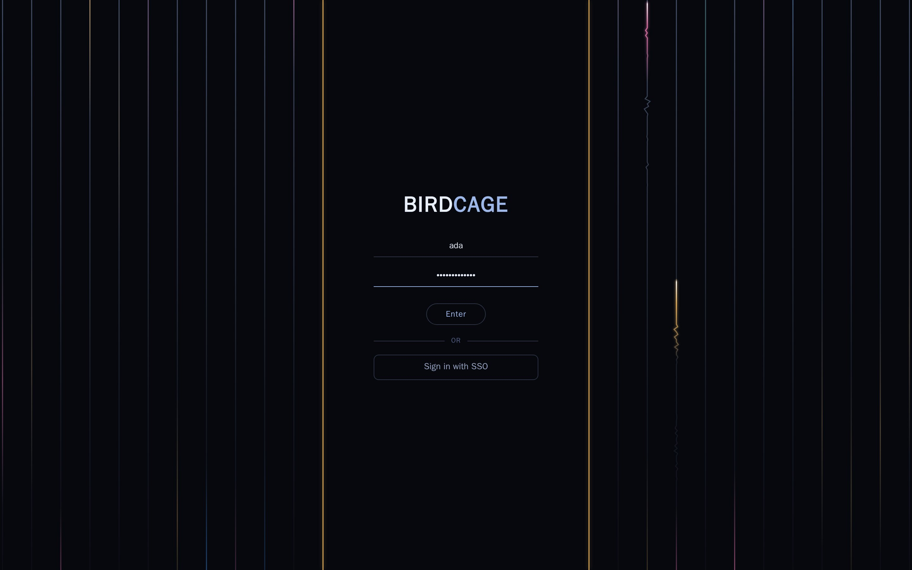
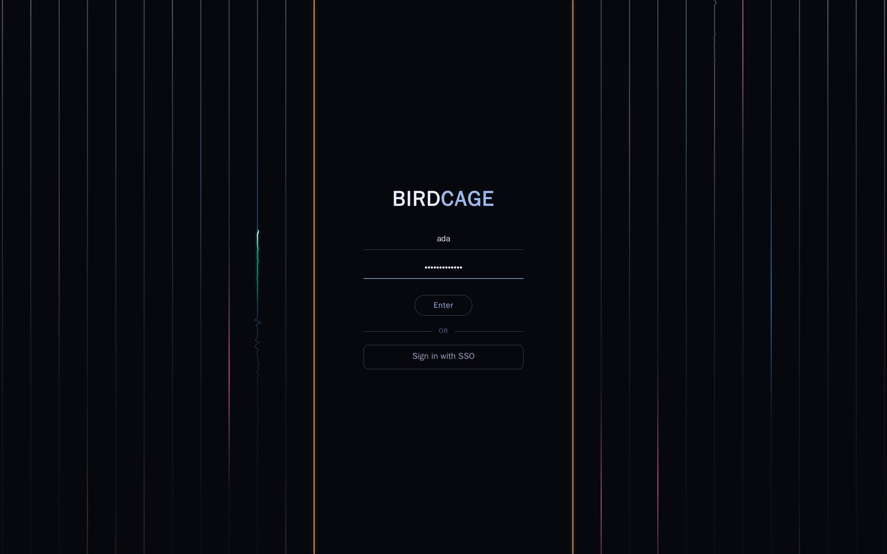
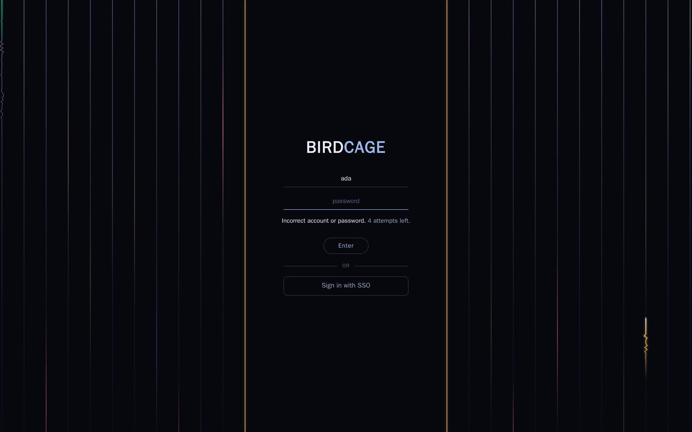
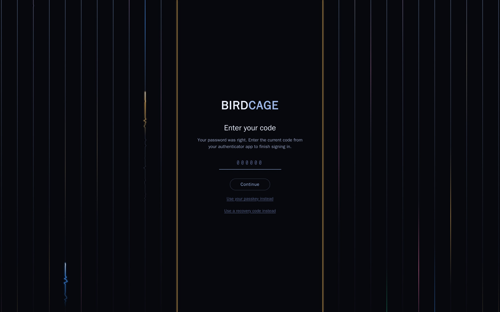

One change from round 15: the wiggle. Behind each pulse the bar now shows a short, sharp trace, like activity on the dashboard's lines: flat, then a burst of spikes, flat again. It is fixed to the bar and flattens out behind the pulse. The light is the shimmer the owner chose (22c). Open the live page.
Round 15's shimmer, kept as it was. Only the wiggle has changed.
Open the live page


